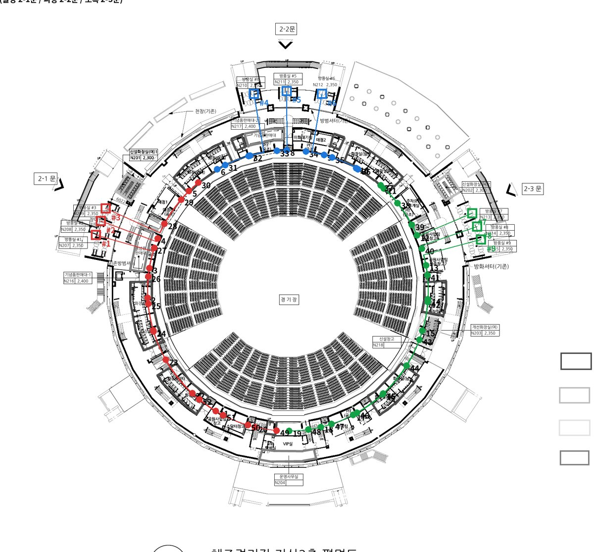
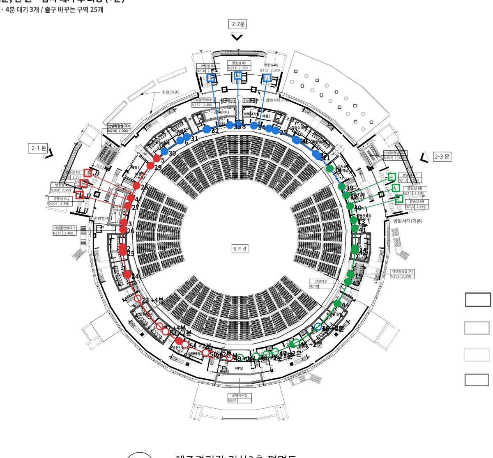
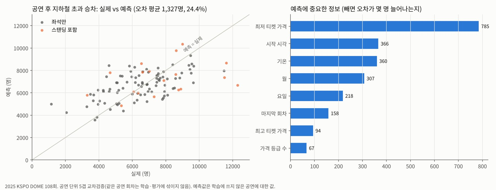

분석 단계
경로망 만들기
평면도를 3D 모델 치수(외곽 반지름 약 63m)로 보정해 52개 구역 → 계단 → 출구 9곳의 경로망을 만들었습니다.
- 출구 문 폭 2.35m, 1분에 약 183명 통과
- 걷는 속도 1.2m/s, 계단 0.6m/s


시뮬레이션과 검증
관객이 일어나는 시간(중앙값 4분), 걷기, 출구 앞 줄 서기를 5초 단위로 계산하고, 줄 길이로 혼잡 등급(A~F)을 매겼습니다.
2025년 공연 108회의 지하철 승차 급증 시간과 비교해 맞춘 결과, 혼잡 시간대 적중률이 14% → 79%로 올라갔습니다.

시차 퇴장 최적화 (MILP)
구역마다 "어느 출구로, 몇 분 뒤에"를 정해 출구 줄 대기와 걷는 거리를 함께 최소화했습니다.
- 38개 구역은 바로, 11개 구역은 2분 뒤, 3개 구역은 4분 뒤 출발
- 24개 구역은 더 한가한 출구로 변경
- 새 조건에서도 3초 안에 다시 계산

조건이 달라져도 버티는지
플로어 관객 0·2,000·4,000명과 관객이 일어나는 속도를 바꾼 9가지 조건 모두에서 최대 대기가 크게 줄었습니다.
관객 일부만 안내를 따르는 경우도 계산했습니다. 준수율 70%를 가정한 계획은 최대 대기 193명으로, 100% 따를 때(211명)와 비슷합니다.

관객 규모 예측
공연 정보·요일·날씨·공휴일 16개 변수로 공연 후 지하철 승차(관객 규모 대리 지표)를 예측했습니다. 평균 오차 1,327명(24.4%)으로, 공연 전에 오늘 조건에 맞는 계획을 미리 고를 수 있습니다.

비상 모드 — 출구 폐쇄 시 재배정
출구 9곳 각각이 막힌 경우 × 플로어 관객 3가지 = 27가지 상황을 미리 최적화했습니다.
- 안내 없이 각자 가까운 열린 출구로: 최대 줄 2,292~2,492명, F등급 (플로어 2,000명)
- EXIT NAVI 재계획: 최대 줄 69~170명, 9가지 모두 F등급 없음
- 대가: 자리 대기 1인 평균 1.1~1.3분, 90% 퇴장 13.7~13.8분 (평상시 13.0분)
귀갓길 — 지하철역 도착 예보
2025년 공연 116회의 역별 초과 승차를 분석한 결과, 9호선 올림픽공원역 69.7%, 5호선 올림픽공원역 24.9%로 두 역이 94.6%를 차지했습니다.
시뮬레이션의 분당 퇴장 인원에 지하철 이용률(47%)과 역 비중을 곱해, 역에 1분마다 도착하는 관객을 예보합니다. 출구 줄이 사라지면 관객이 역에 더 빨리 모이므로, 이 예보는 역 개찰구 개방·임시 열차·안전요원 배치 시점을 정하는 데 쓰입니다.
다국어 · 음성 방송
구역·출구·시점으로 만든 방송 문구를 한국어·영어·일본어·중국어로 자동 생성하고, 브라우저 내장 음성 합성으로 바로 들려줍니다. 해외 관객이 많은 공연에서도 추가 비용 없이 같은 안내를 할 수 있습니다.
귀가 교통수단 — 버스는 1% 미만
서울시 버스 정류장 시간대별 승하차(2024.12~2025.12, 13개월)에서 KSPO DOME 도보권 정류장 9곳(올림픽공원역·올림픽회관·남2문·장미광장 등)을 뽑았습니다.
월 단위 자료라 공연 날만 골라낼 수 없어서, 달마다 그 시간대에 끝난 공연 수와 버스 승차량의 관계를 회귀로 추정했습니다. 계절 차이는 낮 시간 승차로 보정하고, 올림픽홀·핸드볼경기장 공연은 따로 통제했습니다.
- KSPO 공연 1회당 버스 초과 승차: 사실상 0명 (95% 범위 −98 ~ +116명)
- 정류장 범위(9곳/17곳)·시간대(종료 직후/1시간 뒤)를 바꾼 4가지 계산 모두 같은 결과
- 가장 크게 잡아도 관객의 0.9%
| 귀가 교통수단 | 비율 | 근거 |
|---|---|---|
| 지하철 | 47% | 2025 공연 116회 역별 초과 승차 |
| 버스 | 1% 미만 | 2024.12~2025.12 정류장 승차 회귀 |
| 자가용 | 약 4~16% | 2025 올림픽공원 주차 데이터 (추가 540대 × 1~4명) |
| 택시·도보·셔틀 등 | 나머지 |
결론: 공연 후 대중교통 귀가는 거의 전부 지하철(올림픽공원역)입니다. 그래서 EXIT NAVI의 귀갓길 안내와 역 도착 예보는 올림픽공원역에 집중합니다.
교통약자 우선 퇴장
올림픽공원 공식 좌석배치도에서 장애인석 위치를 확인했습니다. 2층 C블록 뒤편(5~11구역 뒤)에 호 모양으로 이어져 있고, 좌석표 기준 82석입니다. 출구(방풍실)도 같은 2층이라 계단 없이 나갈 수 있으며, 가장 가까운 출구는 2-2문 #4·#5·#6입니다.
- 공연 종료 직후, 다른 관객보다 먼저 출발 (다른 관객이 일어나는 시간 중앙값 4분)
- 휠체어 0.8m/s 기준 이동 26~40m, 약 30~50초
- 도착할 때 출구 앞 줄 최대 13명 → 종료 후 약 1분 안에 건물 밖 (플로어 2,000명 기준)
- 준비에 1분이 더 걸려도 줄 대기는 1분 미만
- 혼잡을 피해 기다리던 경우(관객 90% 퇴장 21.8분)보다 약 20분 빨라짐
현장 적용: 대기 보상 · 전광판 · 좌석 QR
대기 보상(순응률): 안내를 따르는 비율을 0~100%로 바꿔 가며, 따르는 비율을 알고 계획을 다시 짜는 최적화(MILP)를 11번 돌렸습니다. 따르지 않는 관객은 가장 가까운 출구로 바로 나간다고 두었습니다(플로어 2,000명).
- 0%(지금처럼) 최대 줄 2,292명 · 위험 21.7분 → 50% 576명 · 6.5분 → 60% 299명 · 위험 0분 → 70~100% 193~211명
- 즉 60%가 안전의 문턱입니다. 기다리는 구역에 실감형 콘텐츠(무대 LED 앵콜 비하인드·포토타임)와 혜택(굿즈·주변 상권 할인)을 주어 이 문턱을 넘깁니다.
- 기다림 보상 카드: 내 출구 찾기에서 대기 구역(예: 16구역, 4분 뒤 출발)을 고르면 출발까지 카운트다운, 그 시간대의 무대 LED 프로그램(커튼콜 → 포토타임 → 앵콜 비하인드), 출발 시각에 열리는 쿠폰이 나옵니다. "지금 나갈래요"를 누르면 구역 관객이 다 같이 일찍 나갈 때의 줄(지금처럼)과 비교해 보여 줍니다.
- 전광판 모드: 운영자 안내의 계획을 그대로 대형 스크린용 신호등(대기·곧 출발·지금 출발)과 카운트다운으로 보여 주고, 출발 시각에 자동 방송합니다. 비상 모드도 그대로 반영됩니다.
- 앱 설치(PWA)·휴대폰 화면: 홈의 "📱 앱으로 설치"로 휴대폰 홈 화면에 아이콘을 추가하면 주소창 없이 앱처럼 열립니다. 한 번 열어 둔 화면은 저장되어, 공연장처럼 인터넷이 잘 안 되는 곳에서도 내 출구 안내가 열립니다. 3D 시뮬레이션도 휴대폰에서 두 화면을 위아래로 보여 주고, 두 손가락으로 확대할 수 있습니다.
- 좌석 QR: 52개 구역 + 장애인석 3곳, 총 55개 QR. 찍으면
find.html#z=구역이 열려 입력 없이 내 출구 안내가 나옵니다.
주차장 데이터로 본 자가용 관객과 퇴장 시각
한국체육산업개발(주)의 올림픽공원 2025 입출차정보(차 한 대씩 입차·출차 시각과 출구, 전체 241만 건 중 33,000건 표본)와 차량입출차·공연·날씨 연계 데이터(시간대별 7,803건)를 분석했습니다. 공연 날을 공연 없는 같은 요일과 비교했습니다.
- 공연 날 저녁 주차는 평소보다 약 540대 더 많음 (평일 저녁 공연 11회 중앙값, 290~1,370대)
- 공연 차량은 예정 종료 85분 뒤쯤 절반이 빠져나감 — 종료 시각까지는 거의 그대로 있다가 45~105분 사이에 몰리고, 2시간 뒤에야 85%가 출차 (공연 74일, 분 단위 실측). 지하철 분석의 "실제 퇴장은 예정보다 약 57분 늦다"와 같은 결과
- 공연 날 늘어난 출차의 83%가 남2문(48%)·동2문(35%)으로 나감 → 차량 출구와 보행 동선이 겹치는 두 곳에 안내 인력 우선 배치
- 한 차에 1~4명이 탄다고 보면 자가용 관객은 약 540~2,160명, 관객의 약 4~16%(좌석 13,948석 기준)
| 공연 종료 시각의 날씨 (2025, 116회) | 횟수 |
|---|---|
| 비 | 7회 (6%) |
| 5℃ 미만 | 25회 (22%) |
| 28℃ 이상 | 19회 (16%) |
| 비 없고 5~28℃ | 65회 (56%) |
공연 10번 중 4번은 퇴장할 때 춥거나(5℃ 미만) 덥거나(28℃ 이상) 비가 왔습니다(기상청 시간별 관측). 날씨가 나빠도 주차 대수는 거의 늘지 않아(비 −5%), 관객 대부분은 그대로 걸어서 역으로 갑니다.
데이터 상태: 연계 데이터의 8~9월·11~12월 시간대별 값은 오류로 보여 제외, '방문객' 항목은 주차 대수×3이라 쓰지 않음. 결과 파일: out/S14-1_주차_공연효과_평일.csv · out/S14-2_주차_분단위_출차.csv · DB 테이블 parking_* 7개
실측 검증 — 지하철과 주차장이 같은 답을 냈어요
공연 종료 예정 시각을 기준으로, 공연 때문에 늘어난 지하철 승차(서울교통공사·메트로9호선)와 늘어난 주차장 출차(한국체육산업개발)가 언제 몰리는지 비교했어요. 서로 다른 기관의 데이터인데 결과가 거의 같아요.
- 예정 종료 1~2시간 뒤에 지하철 64%, 주차장 61%가 몰림
- 예정 종료 직후 1시간은 17%·14%뿐 → 앵콜·퇴장 대기로 실제 퇴장은 예정보다 약 1시간 늦음
- 그래서 시뮬레이션은 종료 지연(57분±40분)을 반영했고, 운영자 화면·계산기의 시각은 실제 종료 시각에 맞춰 쓰도록 안내해요
공연이 늦게 끝날수록 관객이 같은 시간에 한꺼번에 일어나요. EXIT NAVI의 시차 퇴장은 그 "한꺼번에"를 나누는 장치예요. 결과 파일: out/S14-3_지하철vs주차_시간대.csv
| 예정 종료 기준 | 지하철 | 주차장 |
|---|---|---|
| 종료 2~1시간 전 | 3.0% | 2.8% |
| 1시간 전~종료 | 3.2% | 6.9% |
| 종료~1시간 뒤 | 16.9% | 13.8% |
| 1~2시간 뒤 | 63.7% | 61.3% |
| 2~3시간 뒤 | 12.6% | 14.8% |